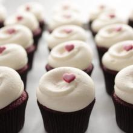
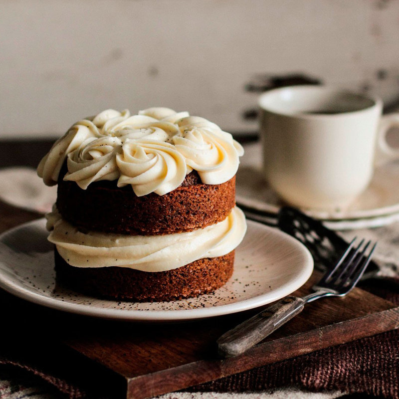
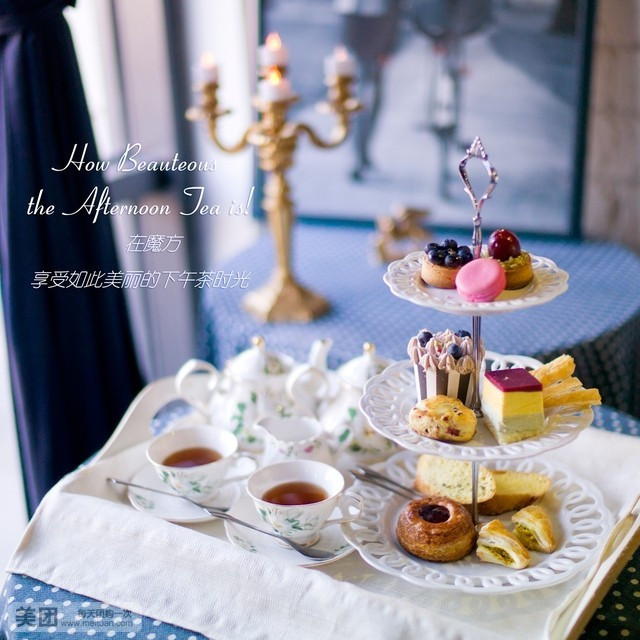

Shop for the Best
With out careful curated vendor list, you'll know what to buy.
Sign up for our newsletter to receive a handpickd selection of the best stories, recipes, and news, delivered weekly to your inbox.
-

2012's Best Summer Cookbooks
With the best of the season coming from "orchards, farms and gardens," NPR has put together an impressive collection of 10 summer cookbooks.
May 23, 2012/ Read >>
-

How to Make Vegetable Chips
About a month ago, I ate almost an entire box of kale chips. My brother and I were visiting out cousin in Broklyn, and before a very thoughtfully prepared vegan...
May 17, 2012/ Read >>
-

Join us on Pinterest!
If i could curate a cookbook for you, this would be is.
May 16, 2012/Read >>
-

Recipes form a Sunday Supper
I could not figure out what to do with the deletable slices of Pear Cake that I brought home from this wonderful Sunday supper - eat them slowly, a little bit at...
May 15, 2012/Read >>